Роман (Hetzer) Прибыловский
Добрый совет:
Всегда помните древнеджедайскую поговорку : Сила есть - ума не надо.
Стволы
Lightsaber
Самое универсальное оружие в игре. После того, как оно будет найдено, основное оружие на всю жизнь. Особенно сильно для поражения пехотной силы противника. Как и в фильме, лазерный меч активно используется в комплекте с силой.
Bryar blaster pistol
Первое оружие Кайла, отличающиеся точностью, низкой скорострельностью и слабой мощью. Интересен только альтернативный огонь - накапливание более мощного заряда. Почти не используется.
E-11 blaster rifle
Основное оружие имперских штурмовиков, а следовательно, и Кайла. Первичный тип стрельбы не отличается особой скорострельность, зато точен. Альтернативник - полная автоматика, но низкий процент попадания на больших дистанциях. Ввиду неплохой мощи используется первую половину игры.
Tenloss DXR-6 disruptor rifle
Местная снайперская винтовка откровенна слабовата в основном режиме, но очень точна. Поэтому чаще используется альтернативник - включение оптики и возможность накапливания заряда. Полный залп расщепляет на молекулы любого пеха, подвернувшегося под выстрел.
Wookiee bow coaster
Основное оружие наймитов Рило Барука. Если бы не откровенная хилость зарядов, хорошая игрушка в стиле "один в поле воин". Первичный огонь - накапливание заряда и выстрел несколькими сгустками плазмы, расходящимися под углом. Альтернатива - одиночные рикошетящие заряды. Ввиду того, что питается энергией, не может составить конкуренцию Е-11.
Imperial heavy repeater with concussion launcher
Скорострельный автомат империи, основное оружие во второй половине игры. Невысокая мощь, но дикая скорострельность помогут вынести даже темных джедаев, а подствольный электромагнитный гранатомет завалит даже АТ-АТ. Из недостатков следует выделить ОЧЕНЬ быстрый расход боеприпасов, и черту всех скорострельных орудий - кривой как турецкая сабля.
Destructive elektro-magnetic pulse 2 gun
Основное оружие против робототехники и охранных пушек совершенно малоэффективно против живой силы противника. Используемый по умолчанию беглый огонь предназначен для легки ботов, а накопив заряд в альтернативнике можно смело выходить на АТ-АТ.
Golan arns FC1 flechette weapon
Полный аналог flack cannon из Unreal Tournament. Здесь это четырехствольный дробовик, стреляющий кучей рикошетящих зарядов. Наиболее ценен в альтернативном использовании - две взрывающиеся мины (тут они еще весело прыгают и катаются) помогут отбиться даже от мехов.
Merr-sonn PLX-2M portable missile system
Классическая ракетница. Очень неплоха в родном режиме стрельбы, но во втором есть возможность навестись на цель и пустить преследующую ракету (что характерно - вместо этого можно пустить три обычных). Очень большая мощь, но как недостаток- маленький боезапас.
Сила
Общая
Jump - прыжки. Чем выше ранг, тем выше и полет.
Push - возможность толкнуть что-то или кого-то, а убить лежащего противника не стоит труда.
Pull - притянуть что-либо к себе, в основном, противника. Для дальнейшей распиловки лазерным мечом.
Speed - чем выше ранг, тем выше скорость. Наиболее удачно реализован в одиночной игре, по сети уже ощущения не те.
Seeing - возможность видеть врага сквозь стены, наиболее ценно в сочетании с ракетницей (доступно только в мультиплеере).
Специальные светлые
Absorb - создает силовое поле, защищающее от вражеской силы (доступно только в мультиплеере).
Heal - просто как никогда - перегонка силы в жизненную энергию.
Protect - защита от повреждений, наиболее ценна при максимальной прокачке (доступно только в мультиплеере).
Mind trick - в кампании применяется на отдельных личностей, которые начинают совершать непроизвольные поступки. По сети все проще - невидимость.
Специальные темные
Grip - возможность взять за горло противника и переместить его. Наиболее эффективно на картах с пропастями - просто отпускаем на волю противника (в мультиплеере эта сила доступна только темной стороне).
Drain - местный вампиризм гораздо эффективнее лечения, так как здоровье может портиться у всех противников, попавших в поле действие кровавой молнии (доступно только в мультиплеере).
Lightning - шарашит током всех, но откровенно слабовата. Похоже, что предназначена на изматывание противника, а не на его убийство (в мультиплеере эта сила доступна только темной стороне).
Dark rage - любимая сила. Увеличивает силу, скорость и реакцию. Наиболее эффективно при прокачке по максимуму (доступно только в мультиплеере).
Общее фехтование
Saber attack - сила и скорость удара. Так же влияет на количество приемов.
Saber defend - возможность отбивать выстрелы и парировать удары противника.
Saber throw - наиболее ценно при третьем ранге - бросить меч и в воздухе управлять им.
Прохождение
Уровень 1, 2
На этом уровне нам предстоит разгромить имперский передовой пост и отправить достаточно важную информацию своим хорошим знакомым. Основными противниками здесь будут штурмовики(stormtrooper) и офицеры. Все они вооружены E-11 - легкими штурмовыми винтовками. Уровень представляет собой два комплекса, соединенные тоннелями.
Начинаем вне основной постройки на посадочной площадке. Сразу же прорываемся сквозь охрану к главным воротам, которые оказываются запертыми. Способ их открытия - стар как мир: поднимаемся на лифтах наверх, в смотровую башню и включаем охранную пушку.
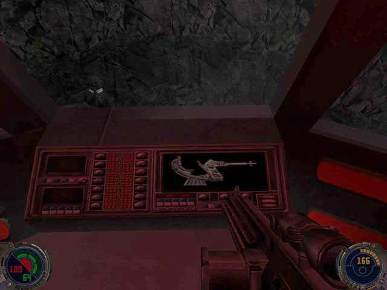
Сразу же после включения на рампе появятся два имперских штурмовика
Возвращаемся к пушке и разносим ворота.
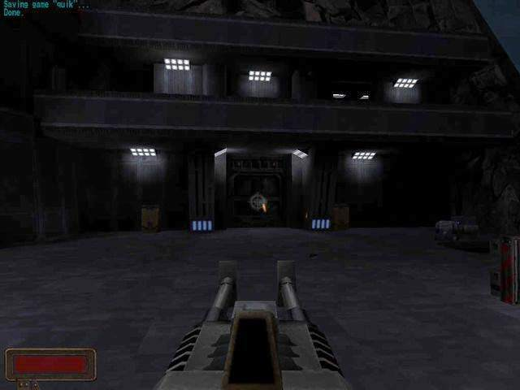
Встав на платформу, едем с напарницей к дверям основного комплекса. Кстати, Джен должна пережить этот уровень, иначе Кайл обречено сядет и закроет лицо руками (между прочим, даже при ураганном огне штурмовиков). Мы попадаем в главный комплекс, который нас радостно встречает обилием запертых дверей. Перебив охрану, идем в дверь, откуда по тревоге выбежало четверо штурмовиков. Там мы находим большую емкость с каким-то легковоспламеняющимся веществом, стоящую на решетке. Взрываем местный бочонок и открываем лаз. Попав в подвальную систему, нажимаем кнопку на стене и взрываем какой- то огромный бак. Будьте готовы убегать от взрывной волны, которая пойдет до конца коридора. Обойдя оплавленные обломки, поднимаемся на платформе и разбиваем поврежденную решетку. Спрыгнув вниз и добив засевшего там офицера, открываем запертые двери.
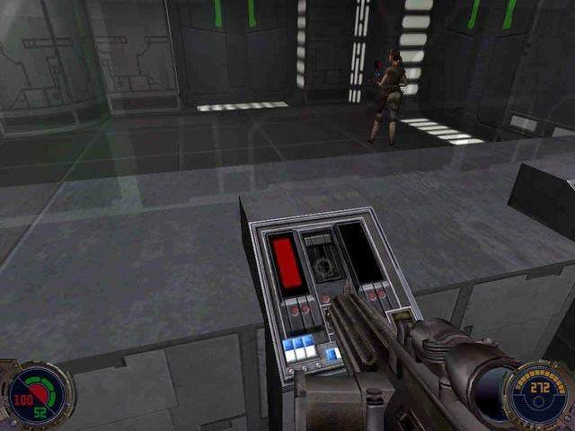
Теперь наступает одна из самых веселых частей уровня - массовая зачистка комплекса. Но сначала попадем в подблок управления. Для этого идем в зал, где находятся примерно пятеро штурмовиков. Подбираем лежащий на ящике прибор ночного видения и опускаем в подвал на лифте. В темноте включаем уворованный у имперских служащих прибор и проходим до небольшой двери (для любителей искать секреты: в одном из углов находится секретная стойка с боеприпасами). Врываемся в комнату и уничтожаем всю охрану. Здесь мы находим первую часть имперского кода доступа (всего их три), она изображена на стене, и терминал с двумя не активированными кнопками, которые откроют Кайлу дальнейший путь.
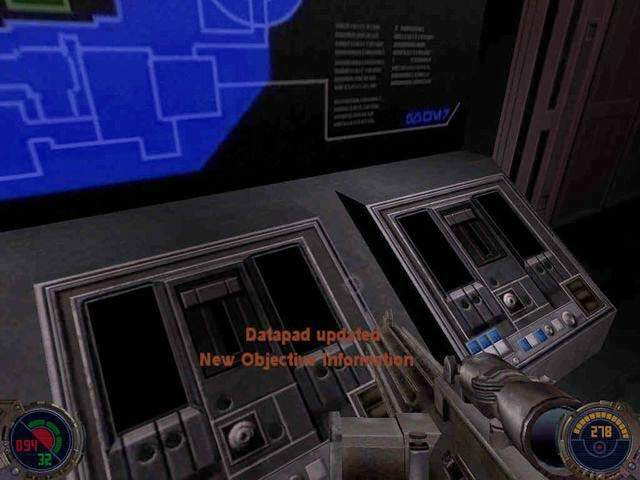
Сделав все дела, идем к силовому полю и отключаем его. В итоге мы выходим на прежний путь. Пройдя вперед, выйдем в центр уровня. Это место представляет собой три дорожки, висящие над пропастью, в центре перекрестка - отключенный терминал. Проходим через отпертые нами двери (тут будьте поосторожнее, над каждой дверью находиться включенная пушка безопасности, которая сразу же откроет по нам огонь, лучше всего деактивировать её несколькими успешными попаданиями из Е-11) и зачищаем очередные части комплексa.
В одном из подуровней мы попадаем на наблюдательную площадку и активируем переключатель, который отключит силовой щит у кнопки на стене.
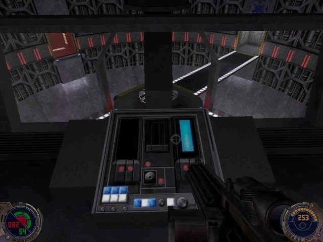
Идем через боковой проход, и проходим к переключателю, активация которого включит центральный компьютер.
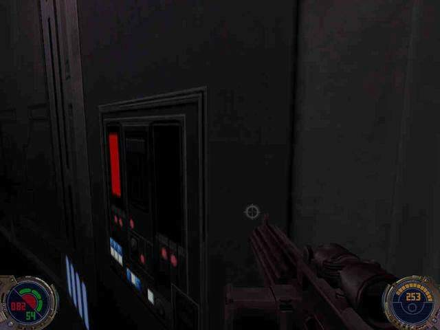
Как только Кайл спрыгнет вниз, на рампе появятся два штурмовика, которых непременно надо уничтожить. Когда мы дойдем до комплекса терминалов в грузовом отсеке, Кайл поймет, что без напарницы ему не обойтись. Она спешит нам на помощь, но её останавливают штурмовики. Теперь наша задача - бежать сломя голову (не себе сломя, а врагам, которые пытаются нас остановить) в зал, где мы спускались на лифте в темный подвал. Уничтожив всех солдат, проводим Джен к терминалам.
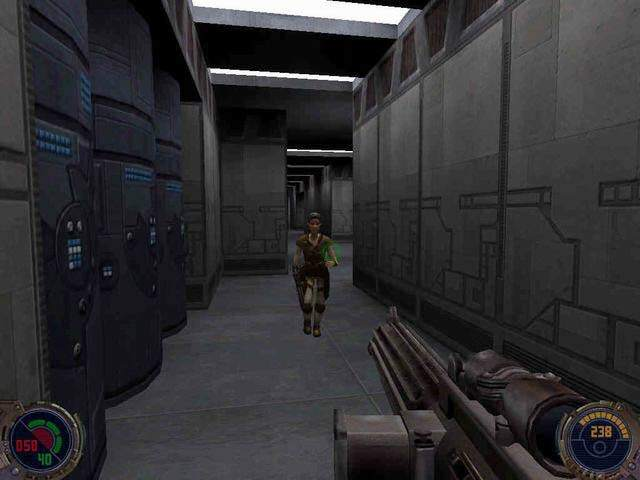
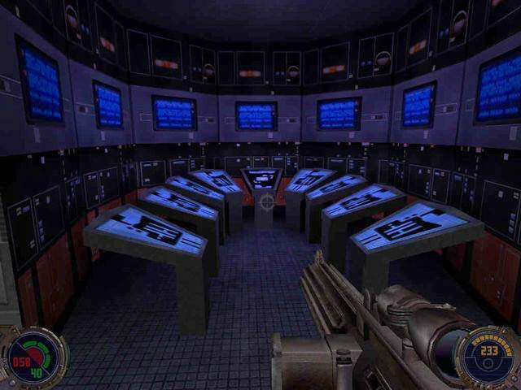
Мастерство хака у подружки Кайла оказалось просто на высоте, и через несколько секунд она открыла дверь к достаточно важной комнате на уровне. Идем к двери напротив грузового отсека и попадаем в комнату с навигационными картами. Порешив всех врагов, обследуем стены и на одной из них находим вторую часть кода доступа.
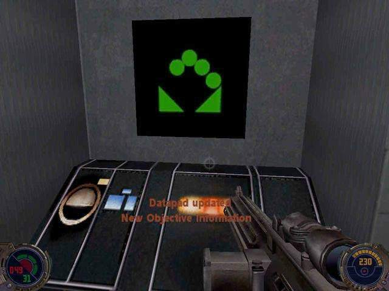
Когда мы узнаем два кода доступа, начинаем обследовать комплекс. Когда мы выйдем во второй грузовой отсек (это где ящики стеной до потолка стоят), ищем терминал спутниковой антенны. Всего у информации четыре цикла, и её всю надо отправить.
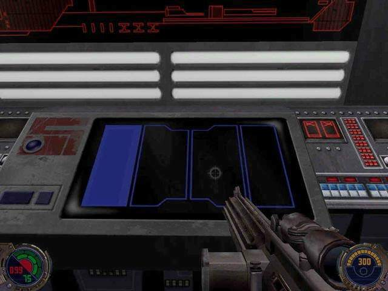
Когда информация будет переправлена, терминал отключится, а Кайлу предстоит сходить в другой комплекс по висячим переходам. Перестреляв штурмовиков, бежим по тоннелю не оборачиваясь - нас ждет несколько неприятных сюжетных сюрпризов.
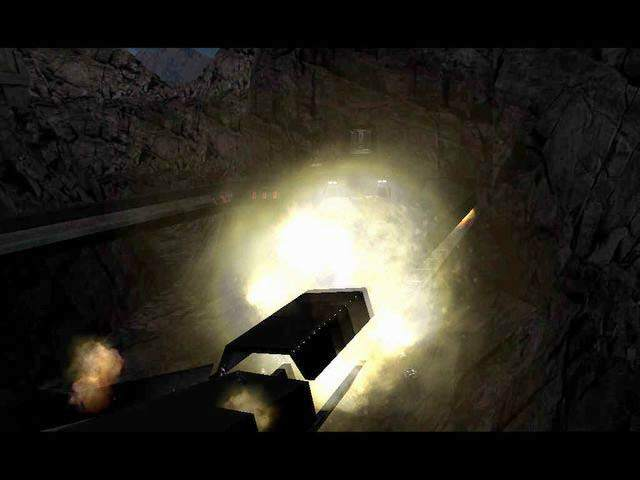
Пробегаем по коридорам и расстреливаем роботов. Нам надо выбраться на поверхность, чтобы вернуться в главный комплекс. Когда Кайл пробежит по крышам тоннелям, ищем путь к грузовому отсеку. Не забываем посмотреть код на стене, это последняя часть. Узнав все части кода, возвращаемся к главному компьютеру. Набрав коды, активизируем три кнопки на панели и наблюдаем, как к нам протягивается дорожка, и перед открывающейся дверью исчезает силовое поле. Идем в эту дверь и завершаем уровень.
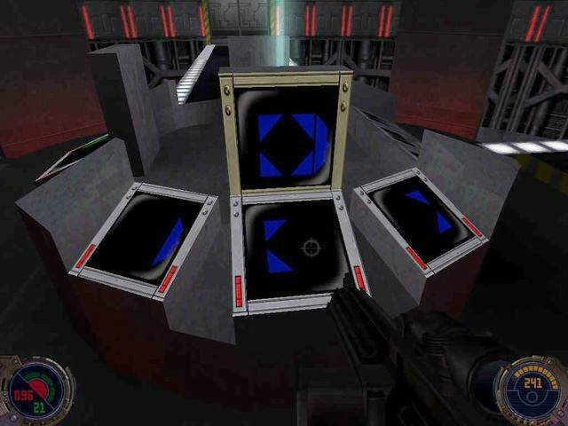
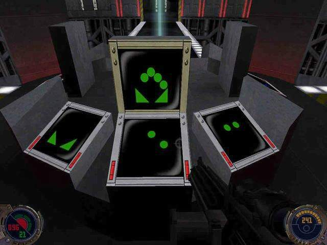
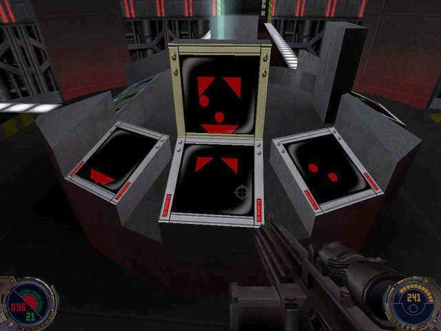
Когда уровень начнется, не спешите выходить за угол - там затаилось пятеро штурмовиков и офицер. Для профилактики можно кинуть за угол несколько детонаторов, хотя перебить их так не слишком сложно. Тут мы знакомимся с новой тактикой открытия дверей - подбираем у офицера ключ и открываем дверь (для этого надо использовать ключ на небольшом терминале, расположенном на косяке). Смысл очередного задания ясен и понятен - покинуть имперский аванпост. Идем вперед и щелкаем всеми переключателями, какие встретим. Тактика первых минут. Чтобы попасть в комнату с морозильником, нажимаем переключатель, который открывает окно.
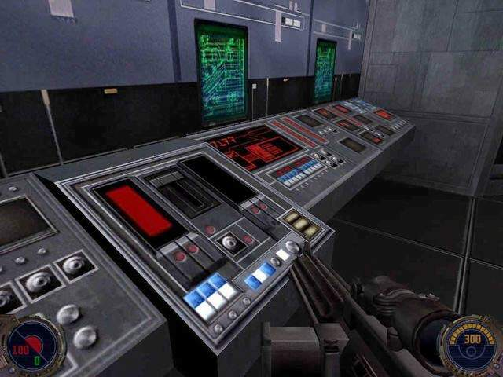
Разбив стекло, проникаем во внутрь и нажимаем две кнопки.
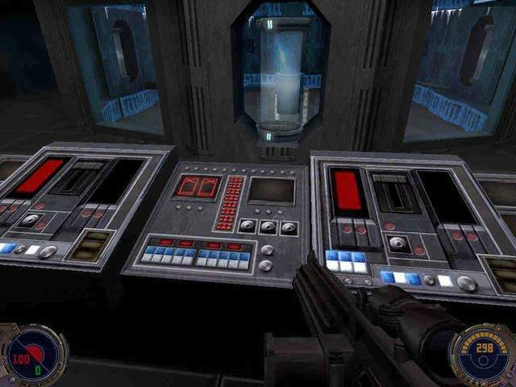
Потом спускаемся на дно морозильной камеры, проходим через дверь к терминалу управления температурой. Открываем дверь и активизируем панель.
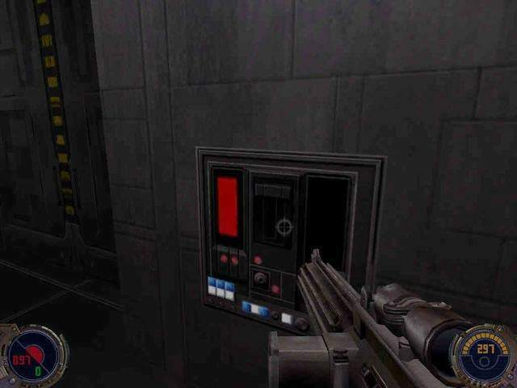
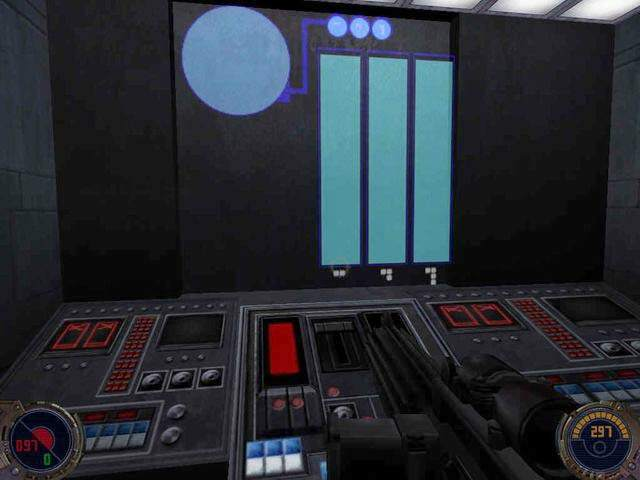
Идем к балке в морозильнике и забираемся по ней на дорожку. Пройдя до колонны в центре комнаты, подходим к окну и уничтожаем бочонок со взрывчаткой, вследствие чего откроется дверь.
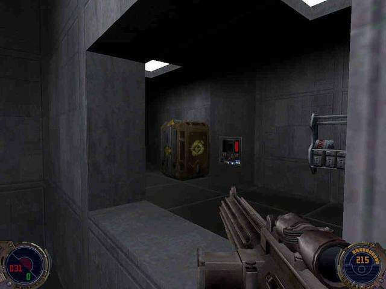
Проходим в отсек и спускаемся вниз.
Там мы найдем переключатель, который тут же активизируем.
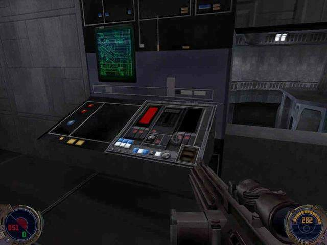
Возвращаемся назад и идем в основание колонны. Когда Кайл выйдет из трубы, он окажется в криогенном отсеке. Пошаманив над терминалом, мы выдвигаем капсулы и лезем наверх.
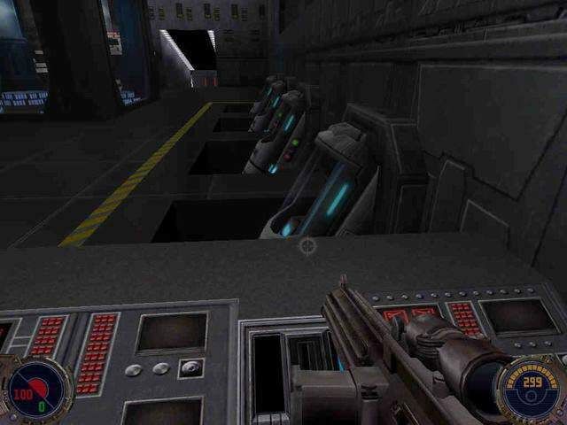
Там мы обнаруживаем развилку. Я сначала сходил к карцеру, там можно забраться наверх и отключить силовые поля.
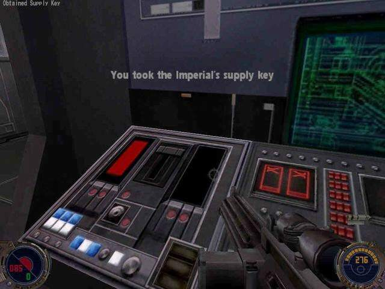
Перестреляв потом роботов-охранников, можно зайти в небольшие, но полезные склады. Потом я вернулся обратно и пошел в другую сторону. Обнаружив терминал управления криогеникой, включаем его и портим имперское имущество.
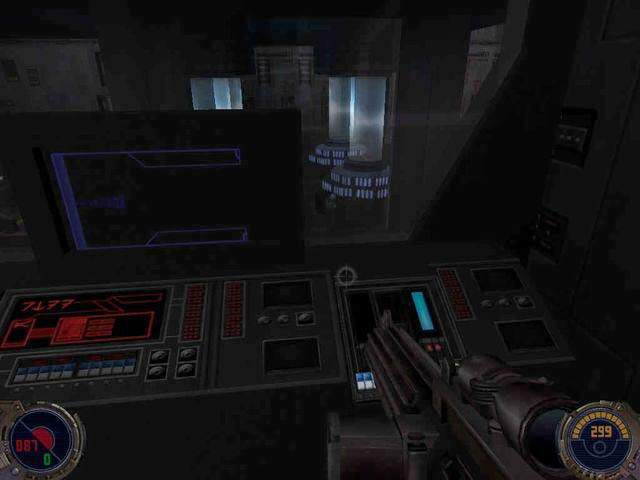
Обследуем комплекс в поисках выживших и обнаруживаем вход в вентиляцию. Когда мы окажемся в комнатке с запертыми дверями, подойдите к окну и дайте обнаружить себя офицерам. Нетерпеливые штурмовики откроют дверь, в которую мы и прорываемся. Зачистив комплекс и нажав кнопку на терминале, проходим к двери.
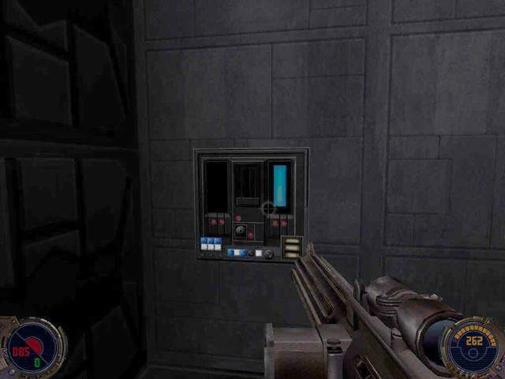
Взорвав мины метким броском термального детонатора, идем дальше. Вскоре мы обнаружим новое препятствие - охранную пушку, управляемую вражеским офицером.
Забиваем врага и поднимаем тревогу. Можно справиться с шестью штурмовиками своими силами, а можно и занять турель.
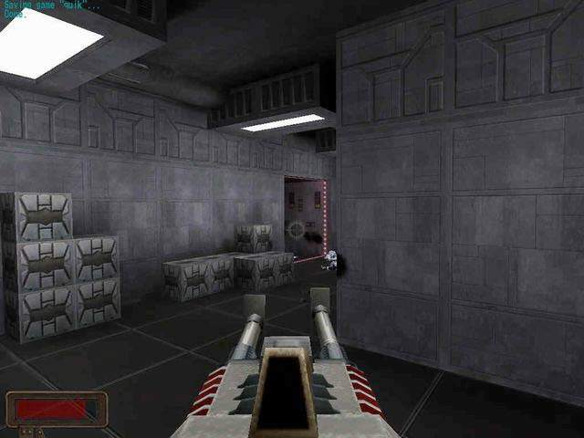
Проходим в тот комплекс, который они охраняли и за защитным стеклом нажимаем кнопку.
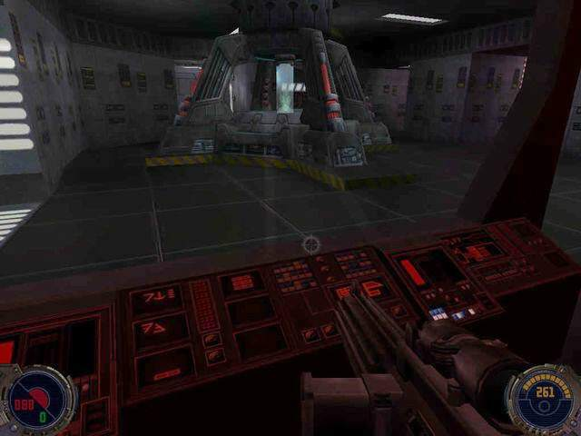
Стоящий в центре комнаты агрегат начнет испускать лазерные лучи, которые проделают в двери дыру. Уворачиваясь от лучей, проникаем в созданный ход и обнаруживаем себя в комплексе, одна часть которого заражена и нуждается в очистке. Подходим к терминалу управления роботом и активизируем его.
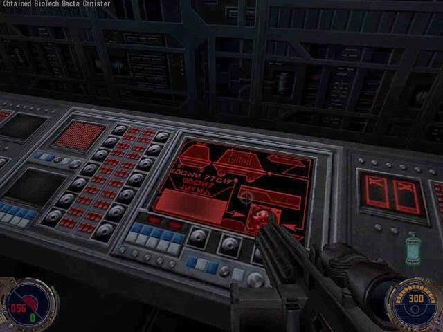
Теперь Кайл управляет небольшим роботом, похожим на полотер. Едем в зараженный комплекс, стараясь не попасть под электрические заряды. Чтобы открыть роботу дверь, ищем переключатели.
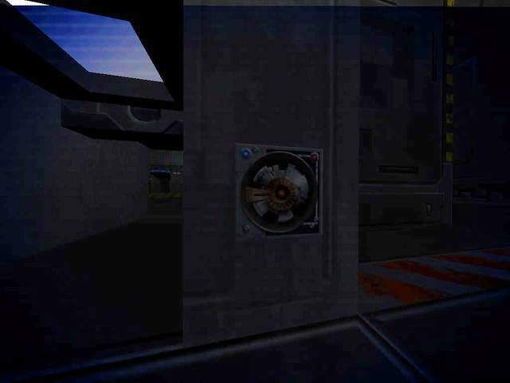
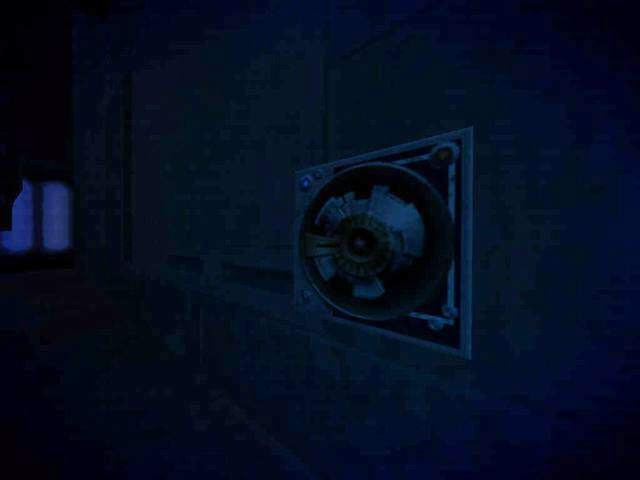
В конце концов мы увидим последний переключатель, который обязаны нажать, чтобы убрать заражение.

Теперь можно смело бросать управление роботом и идти через очищенную комнату на конвейр с кристаллами. Как только комплекс будет покинут, миссия окончиться.
Уровень 3, 4, 5
После короткого разговора с начальством, Кайл оказывается недалеко от имперских шахт с новым партийным заданием: прервать добычу кристаллов, освободить пленников и нанести как можно больше урону собственности Империи. Путь Кайла лежит в одиноко стоящую вышку на краю пропасти. Переключив что-то на терминале, поднимаемся по трубам наверх.
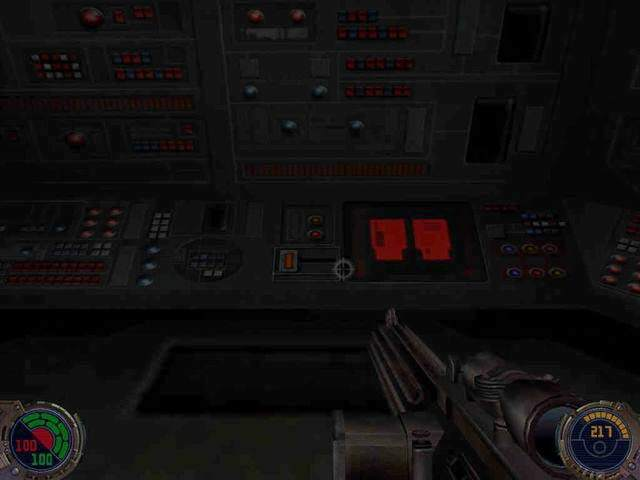
Будьте осторожнее, некоторые трубы разваливаются и любезно предоставляют Кайлу возможность слетать вниз метров так на двести. Поднявшись наверх, приступаем к плановой зачистке здания. С ориентацией тут нет проблем: практически все двери закрыты, и путь наш лежит через большие пространства и узкие коридоры. В итоге наших блужданий мы выйдем на перекресток (это где бетонированную дорожку пересекает каменная тропа с проломами). Зачищаем тропинку и идем по бетонке. Лучше всего повернуть на развилке направо, Там мы попадем в отсек управления, а оттуда в шлюз. Полюбовавшись на безжалостно убитого (просто так он при всем желании испортиться не мог) R2D2.
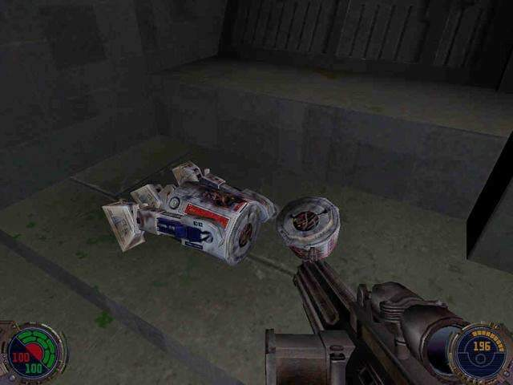
Забираемся на возвышение и ждем транспортник.
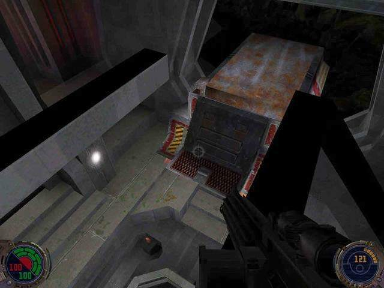
Как только он начнет проверяться, запрыгиваем к нему на спину и едем, точнее летим из шлюза. Внимательно осматриваем левую стену - в ней есть пробуравленный ход, в который надо запрыгнуть. Попадя в своеобразный лабиринт, идем до конца. Ориентироваться здесь лучше всего по местному зверью, оно попадается на правильном пути (так как уродцы очень агрессивные, тут надо поосторожнее). В итоге блужданий, Кайл попадает к камнедробильной установке. Запускаем агрегат и следуем за ним.
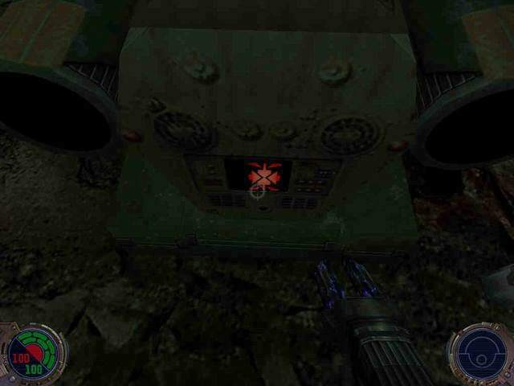
Как только он провалится, ждем, когда над лавой появиться транспортник, на который и спрыгиваем.
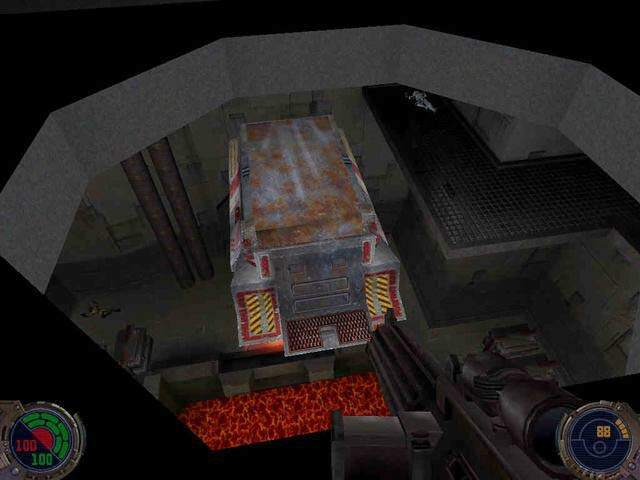
Перестреляв всю охрану и спустившись вниз, идем в дверь и обнаруживаем большой и интересный терминал, рядом с которым находиться заманчивая красная кнопка. Наш долг перед Родиной - эту кнопку нажать, и очень быстро убежать из комплекса.
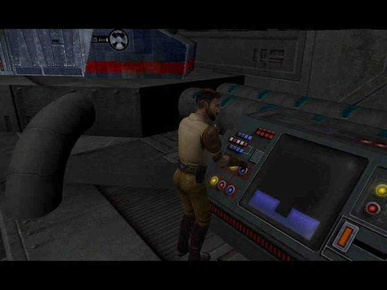
Бежим к дорожке, на которой стоит небольшая дрезина, запрыгиваем на неё и уезжаем с этого уровня.
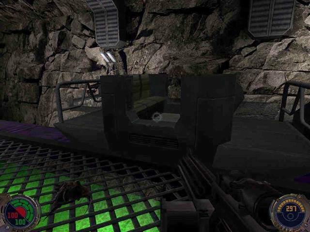
Следующий уровень представляет собой огромный столб, обвитый лестницей. Смысл уровня - поднимаемся наверх, чтобы освободить узников. Дело в том, что столб и является тюрьмой (за силовыми полями находятся камеры), а на самом верху есть пара переключателей, которые нам надо нажать.
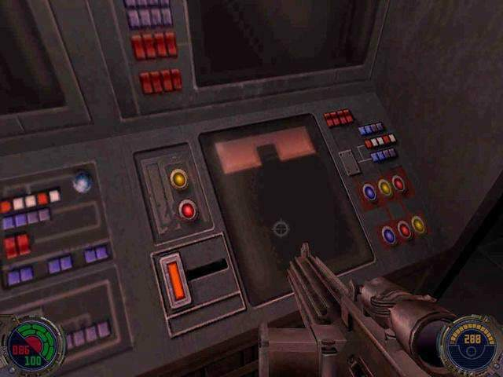
Приятному продвижению наверх нам будут мешать орды/легионы (нужное подчеркнуть) штурмовиков и офицеров. В конце концов Кайл доберется до вершины столба и попадет в комнату управления. Там нажимаем две кнопки - одна включает вентилятор в шахте, а другая отключает силовые поля.
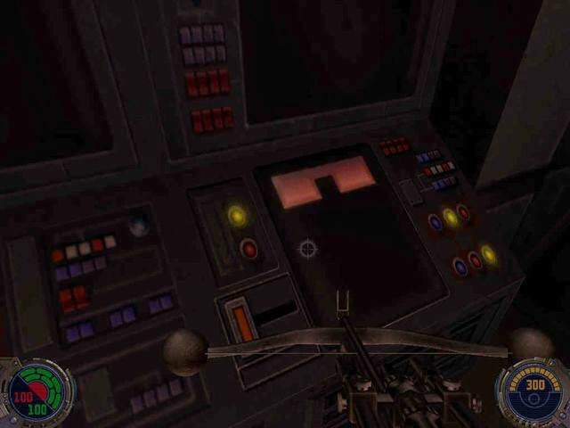
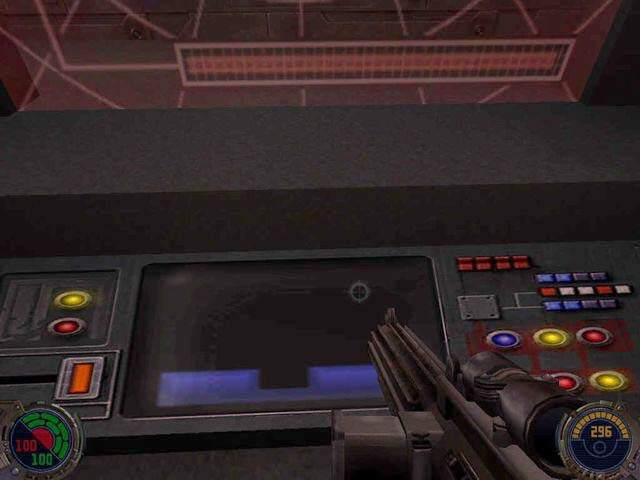
Освободив пленников, идем вниз.
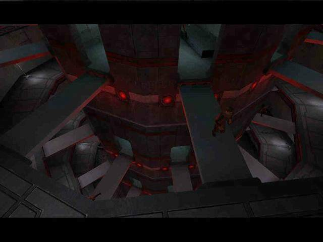
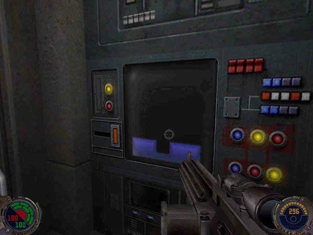
Там мы встречаем живого узника.
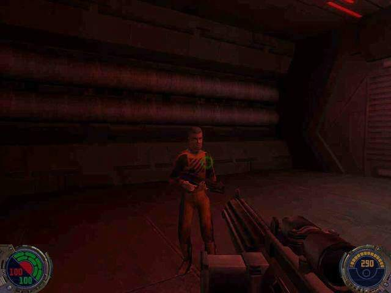
Он ведет нас к ангару тайских истребителей.
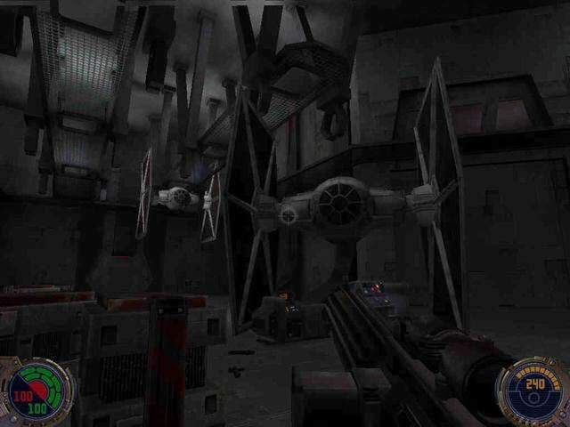
Подавив все сопротивление, отправляемся на поиски главного офицера. Когда найдем, следуем за ним (что характерно, офицер двигается только когда на него наведен прицел).
В итоге Кайл окажется в комнате управления, но будьте готовы к предательству: когда офицер подойдет к терминалу, откроется дверь и из неё выбегут несколько штурмовиков, а наш пленник достанет Е-11. Порешив народ, идем в открывшуюся дверь и прыгаем в вентиляционную шахту.
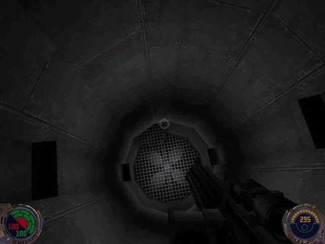
Включенный вентилятор замедлит падение Кайла. Потом пролезаем в пробитый вентиляционный ход и попадаем в лабиринт. Ориентируясь по местному зверью, выходим в комплекс. Теперь Кайлу надо пробиться в ангар. Нажимаем все кнопки, которые встретим.
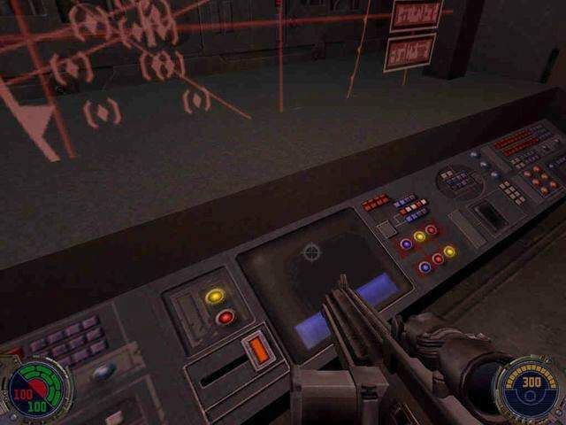
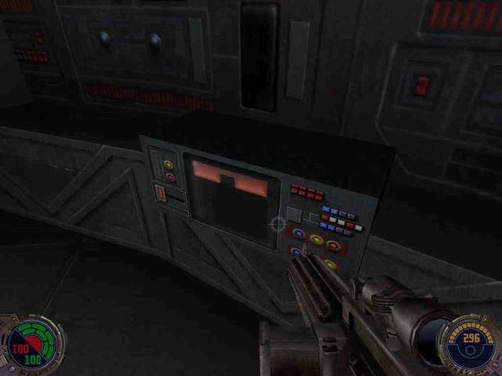
И попадаем в место назначения.
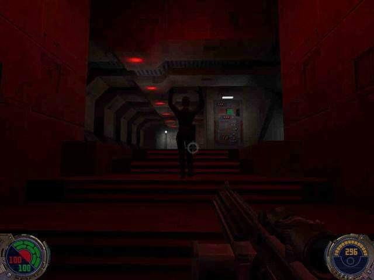
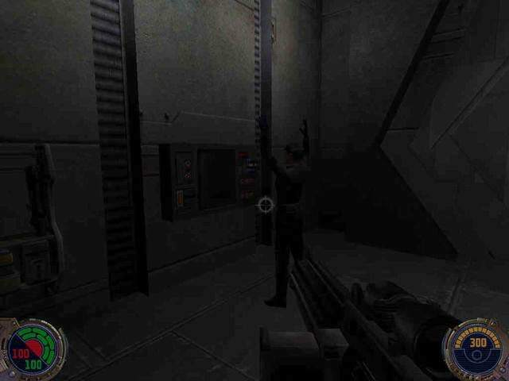
Подойдя к двери, завершаем этот уровень.
Теперь нам предстоят тяжелые бои. Уровень начинается под огнем АТ-АТ.
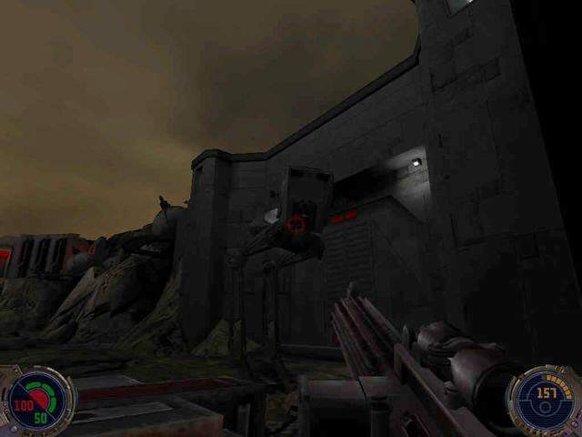
Всего на уровне три таких шагателя. Чтобы уничтожить их, идем в будку слева и включаем подъемник.
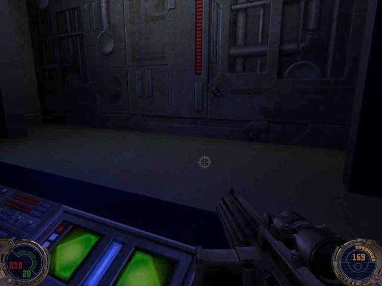
На лифте поднимаемся наверх и во второй будке включаем пушку.
Садимся в турель и расстреливаем эту пародию на меха. Будьте осторожны - из ангара за спиной кайла вышел ещё один и открыл огонь по узникам, стоящим на платформе.
УЗНИКИ ДОЛЖНЫ ВЫЖИТЬ, а AT Walker должен быть уничтожен. Расправившись с врагами, спускаемся вниз и бежим вперед. Когда Кайл будет недалеко от ангара, выйдет третий шагатель. Тут есть два варианта - заманить в зону обстрела первой пушки и заколбасить насмерть, или плюнуть на урода и побежать в открытые двери ангара. Поднявшись на лифте, мы оказываемся на верхнем уровне. Добежав до турели (в зону поражения которой попадает АТ-АТ), расправляемся с шагателем. Цель уровня - взорвать две осадные пушки. Чтобы сделать это, проникаем в ангар с отключенными шагателями. Спустившись вниз, отключаем силовые поля,
Затем возвращаемся к турели и расстреливаем пушки.
Краем глаза замечаем, как на площадку за скалами садиться наш челнок.
Бежим через ангар к площадке и встречаем свoего главного врага - мастера Дессана.
Этот темный джедай берет в плен Джен и начинает атаковать Кайла. ДАЖЕ НЕ ПЫТАЙТЕСЬ ЕГО ЗАМОЧИТЬ - по сюжету Кайл будет побежден Дессаном, но джедай благородно щадит своего противника. Зато Джен почувствовала лазерный меч от копчика до горла (жалко крови в игре нет) и благополучно скончалась. Кайл клянется мстить и решает вернуть свое имя джедая и лазерный меч.
Уровень 6, 7
Просто туториал. Сначала Кайл должен найти Люка и рассказать ему о своем решении. Скайуокер многое нам расскажет о Дессане и о Рило Баруке - цели следующего задания Кайла.
Потом джедай направляется в храм, где он научится пользоваться примитивной силой и достанет свой лазерный меч. Смысл уровня - пройти все элементарные головоломки. Противников здесь нет, только акробатика, так что сложностей тут не замечено.
Уровень 8, 9, 10
Теперь наша задача - отыскать Рило Барука. Этот контрабандист связан с Дессаном и может помочь его найти (интересное наблюдения - если кого-то надо найти, то в итоге его придется порешить). Уровни тут рассчитаны на акробатику и Силу, поэтому проблем с прохождением нет вообще. Сначала Кайлу надо подняться на самый верх. Чтобы открыть спрятавшегося бармена, надо нажать кнопку в офисе
И на стойке.
Потом начинаем бегать по карнизам,
стараясь попасть в тележку со сломанным роботом. Для этого прыгаем по небольшой барже и проходим в стеклянный коридор.
Обесточив генератор, запрыгиваем наверх и нажатием кнопки пододвигаем стальную платформу к себе. Вторую подтягиваем к себе с помощью Силы.
Потом прыгаем на баржу и начинаем двигаться вдоль стены.
С помощью Силы нажимаем на переключатели, что поможет нам ехать дальше.
Попав в заборник, завершаем этот уровень.
Теперь Кайл на сталелитейном заводе. Запрыгиваем к решетке и пробиваем её. Теперь обследуем и зачистим комплекс. В одной комнате мы найдем отодвигаемый силой ящик. Пройдя по тоннелю, замечаем тележку, загораживающую проход.
Возвращаемся в главную комнату и ищем раструб с открытой дверцей. Дожидаемся пока поднимется пресс и запрыгиваем в раструб. Теперь ищем ту же дорожку с тележкой. По дороге взрываем бочонок, который нам откроет дальнейший путь.
Найдя тележку, тащим её на себя, потом возвращаемся на начало и толкаем вторую тележку от себя и проходим в дверь. Когда Кайл попадет в кaмеры, он встретит там своего знакомого, который скажет ему пароль и попросит его освободить.
Идем на верхние карнизы и находим рубку управления. Говорим пароль и проходим в открывшуюся дверь.
Нажимаем кнопку и убираем силовые поля в тюремных камерах. Возвращаемся к своему товарищу и следуем за ним. Теперь Кайлу предстоит угнать корабль Рило Барука. Побегав по ангару и вырезав все местное население, активируем все переключатели и попадаем в комнату контрабандиста. Поговорив по душам с Рило.
Приготовьтесь отражать атаку численно превосходящего противника. Жестоко подавив врагов, следуем в ангар встречать напарника.
Когда он забежит в корабль, готовьтесь прикрывать его.
Перестреляв врагов, выполняйте последнее задание - открыть шлюз и заправить корабль.
Подсказка - код заправки изображен на бочонках сбоку корабля. Подсветка на шлангах (синяя или красная) покажет соответствующий цвет терминала. Итак, ищем два переключателя в отдельных комнатах (в одну из них можно попасть, разбив решетку у стены ангара).
И смотрим наверх в поисках двух топливных терминалов.
Их не трудно найти по двум большим трубам, пересекающим уровень.
Подготовив корабль к взлету, заходим в кабину.
И обнаруживаем в шлюзе турель с сидящим в ней Рило и несколько охранников вокруг. Наш напарник любезно выдвигает носовую пушку и вопрос о жизни Барука решается в несколько секунд.
Уровень 11, 12, 13
Город В Облаках. Добро пожаловать. Кайл должен найти здесь всех наймитов Дессана. Местная архитектура достаточно необычна. Например, мы все время должны забираться наверх.
Будьте осторожнее с основанием - это огромный поршень, который может элементарно сдуть Кайла в никуда. Ждем пока поршень опуститься, запрыгиваем на него и поднимаемся наверх.
Зачищаем локацию и внимательно смотрим на возможность применения Силы. Дело в том, что в комнате может находиться небольшой человечек, которому надо подействовать на мозги Силой mind trip. Он откроет дверь, через которую нам надо пробежать, предварительно сбив замок. Поднявшись наверх, обнаруживаем нового (а далее и постоянного) противника - темного джедая.
Зарубав гада, продолжаем свой путь.
Расчистив дорогу, начинаем искать цель нашего присутствия - R2D2.
Когда Кайл найдет бота, тот включится и будет открывать для нас двери. Теперь мы должны идти впереди и расчищать роботу дорогу. Вскоре противники изменят свой облик - вместо контрабандистов нам начнут попадаться штурмовики и постоянные противники офицеры. Уже можно запомнить дальнейшую тактику - убиваем офицера и находим ключ охраны, которым отпираем закрытые двери. В конце концов, переключателями открыв все двери,
Выйдем к боссу - подручной Дессана.
После короткого разговора завяжется бой, который окажется достаточно простым.
После боя мы узнаем, что Джен жива и содержится на имперской базе, куда Кайл незамедлительно направляется.
Уровень 14, 15, 16, 17
Теперь Кайл находиться на имперской базе в астероидах. Изначально нам надо найти Doomgiver - командный корабль адмирала Галака. Но для этого следует выбраться из доков. Обследуем и зачищаем комплекс и в одном отсеке находим Люка Скайуокера.
Отбив вместе с ним атаку штурмовиков и темных джедаев, находим центр управления лифтами и нажатиями кнопок открываем двери центра управления и активизируем два лифта к ним.
Выходим в главный док и рубим в капусту всех, кого найдем. Потом поднимаемся к кабинке и на красном терминале переключаем до тех пор, пока не увидим как значок примет правое положение. Потом идем к синему терминалу и нажатием на него открываем ворота.
Спускаемся и начинаем зачищать локацию. Далее ищем вход в вентиляцию, причем многоуровневую. Тактика прохождения - находим рубильник и выключаем силовое поле.
После прорубания потолка, Кайл оказывается где-то за доками и недалеко от лифта. Открываем дверь (по одному терминалу в боковых комнатах).
Идем в шахту лифта. Выйдя наружу и перекосив пару десятков имперцев, направляемся куда глаза глядят, точнее, где двери не закрыты. В одном помещении, чтобы пройти, надо подействовать на мозги имперцу, стоящему за стеклом.
Вскоре мы выйдем к какой-то строящейся конструкции (вроде как десантная капсула). Запрыгиваем на самый верх и идем в отсек с четырьмя трубами с электричеством.
Уничтожаем их и сварочный аппарат зацикливает. Как следствие - взрыв и освобождение Кайлу прохода.
Когда мы уже будем воевать внутри базы рядом с десантными капсулами, выбегут два небольших меха с недобрыми намерениями.
Уже в это время должно быть ясно - вся робототехника выносится или электромагнитными зарядами, или взрывными (при желании и сноровке можно и лазерным мечом). Побегав по комплексам и попереключав терминалы и кнопки.
Мы добьемся своего - откроем Кайлу дальнейший путь и нарвемся на АТ-АТ.
Уничтожив AT Walker'a, идем в открывшиеся двери и попадаем в реакторную часть. Сначала пробегаем от лучей, а потом прорубаем себе дорогу сквозь установки.
Похоже, именно здесь по- настоящему серьезно применяется Сила speed.
Когда мы попадем в реактор, будьте осторожны в конце - штурмовики засели прочно, а вынести их можно только из расщепителя. После реактора будет еще интереснее - Кайлу предстоит встретиться с новым и очень опасным противником - shadowtrooper'ом.
Этот ниндзя вооружен лазерным мечом и знает, как пользоваться Силой. Победив врага, мы попадаем в комплекс с повышенной опасностью.
Задание "не быть обнаруженным врагом" на самом деле звучит так - не дать нажать врагу на терминал тревоги. Аккуратно поползав по вентиляции, отключаем электричество на генераторах, проходим между ними и идем дальше. Есть место, где тревогу включает человек стоящий за стеклом, поэтому идем не в главный ход, а в вентиляцию, чтобы на находящемся на выходе терминале выключить свет.
Аккуратно и тихо проползаем мимо имперцев и выходим через двери. Когда темный комплекс будет покинут, убиваем двух офицеров и выходим к крейсеру. Обходим кабину и заходим в открытую дверь. Наблюдаем поединок Люка и Дессана, но ничего не можем сделать.
Уровень 18, 19, 20
Пришло время побегать по крейсеру Doomgiver. Все уже наверняка заметили код в системе брифинга, так что наша конечная задача очень сильно облегчается. Вообще это один из самых приятных уровней в игре. Почти нет закрытых дверей, толпы врагов и тонны боеприпасов. Но уже нужда в боеприпасах отпадает - почти все Силы у Кайла уже прокачаны до третьего ранга, так что проблем не предвидится. Итак, спускаемся вниз и нажимаем на кнопку за дверью.
Рубим всех врагов в округе и на лифте спускаемся вниз. Обнаруживаем две небольшие пустые комнаты и обследуем их потолок. В одной комнате мы находим секретку, в другой дальнейший путь. В вентиляции будьте осторожнее - охранные роботы (такие же как в карцере на первом уровне) очень опасны. Пробив решетку, падаем вниз и находим терминал R2D2.
Оказывается бот может проходить сквозь силовые поля. Управляя им, открываем закрытые двери изнутри.
Потом идем через эти двери и крошим в капусту всех находящихся там имперцев. Спускаемся вниз и выходим к двум небольшим мехам. Уничтожив гадов, запрыгиваем на платформу с трубами, и обнаруживаем там открытый вентиляционный тоннель.
Проползаем по нему и оказываемся в комнате с двумя R2D2. Открываем двери с терминала...
...и идем искать дрезину. Так как она находится на этом же уровне, проблем не возникнет.
Проехав на лебедке, попадаем к системе управления Щитами. Спускаемся на лифте вниз и начинаем искать комнаты с терминалом отображающими код. Их тут много, а мы должны выбрать правильный.
Вдоволь напрыгавшись, возвращаемся в главный зал и в кабинках нажимаем кнопки подтверждения.
Эффект - с крейсера убираются силовые поля, что делает его уязвимым для огня союзнических истребителей.
Потом возвращаемся к терминалу вне зала и начинаем его хакать. Меньше чем через минуту, Кайл отправляет запрос на штурмовку корабля, узнает местоположение Джен и успевает всем передать привет.
Теперь мы попадаем ангарные отсеки. Внимательно обследуем все терминалы. Дело в том, что через один комп можно переключится на турель и весело отстреливать тайские истребители.
Наигравшись досыта, продолжаем свой путь и попадаем в ангары. Вот тут как говорится, понеслась душа в Рай: огромные площади забиты штурмовиками с самыми недобрыми целями. Но если драться совсем не хочется, есть другая фишка - забегаем в комнату управления и нажимаем две кнопки на терминалах. Одна разблокирует двери, другая уберет щиты. В общем: всех, кто находился в ангаре, утащит в космос.
Правда, перед выходом не забудьте загерметизировать отсеки, а то мало ли что. Движемся дальше и наконец находим Джен.
Выбегаем достаточно интересным способом: держим кнопку, напарница пробегает и держит другую, что позволяет Кайлу продвигаться дальше. Но потом мы получаем новое партийное задание и расстаемся с подружкой. Нам предстоит полностью убрать щиты и разрушить корабль. Зачищаем комплекс и нажимаем кнопку в комнате управления. Проходим в колонну в центре комплекса и прыгаем в шахты.
Выбравшись наружу, поднимаемся на лифте в зал с элементом питания. Взрываем сначала красные блоки над трубами, а потом и сами трубы.
Когда все будет уничтожено, на нас выйдет адмирал Галак, который начинает нести такой дикий бред насчет возрождения Империи, что Кайл не выдерживает и сносит последний блок щита. Будущий император звереет и бросается в атаку. Начинаем сбивать с него силовое поле любой электромагнетикой, а когда оно исчезнет, метким выстрелом сбиваем красную фиговину, возвышающуюся у него над головой. После этой ампутации добить адмирала не составит труда. Когда тот взорвется, крейсер начнет погибать, и отключится гравитация. Теперь наша задача - покинуть корабль. Идем, а точнее летим к началу уровня, где нас встретит Джен и проводит к десантной капсуле.
Уровень 21, 22, 23, 24
Финальный эпизод мы встретим под открытым небом. Минимум закрытых дверей (собственно их совсем нет) и максимум врагов обеспечивают веселую жизнь Кайлу. Тут надо добраться до джедайской академии и попутно уничтожить все силы вторжения. Другими словами приказано выжить. Самое обидное то, что большая часть уровня совершенно не приспособлена для использования лазерного меча. Особо опасно тут его бросать - болота гасят меч и любезно приглашают его в свои недра.
Завалив АТ-АТ, начинаем двигаться по болотам, отстреливая болотных штурмовиков. Дойдя до целой десантной капсулы, мы видим пустого шагателя. Залезаем в него и начинаем рашить все, что попадет под руку. Или под ногу, ведь давки еще никто не отменял. Всего пустых АТ-АТ на уровне два, второй находится примерно на середине. Дойдя до еще одной капсулы, выходим из робота и лезем в скалы. Разобравшись с врагами, попадаем внутрь академии. Достаем свой любимый лазерный меч и начинаем шинковать врагов. Именно тут развертываются командные джедайские разборки.
Прорубив себе дорогу, выходим на площадь, где видим, как Дессан уходит в храм, оставив двух элитных охранников.
Разобравшись с ними, следуем за темным джедаем. Теперь Кайлу предстоит победить своего главного врага. Разбиваем камни и идем в тоннель. Запрыгнув на площадку, поворачиваем направо - ложная стена.
Пробежав через огненный коридор, видим трех Дессанов. Поворачиваем направо и уничтожаем трубу, из которой капает вода.
Ждем, когда погаснет огонь, а потом прыгаем в пролом. Там используем Силу push на барельефы, а когда они отъедут, обследуем стены и находим еще один.
После воздействия, откроется ход, но со смещающимися блоками. Пройдя это последнее препятствие, выходим к Дессану.
После непродолжительного разговора, начнется бой, из которого Кайл должен выйти победителем. Одолеть врага будет легко, особенно пользуясь Силой.
Когда тело Дессана рухнет на землю, можно расслабиться и посмотреть последний ролик.